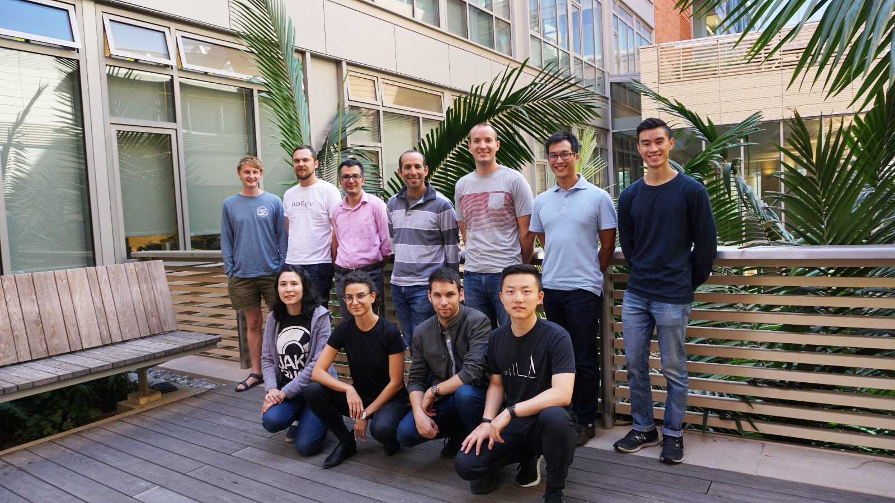
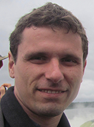
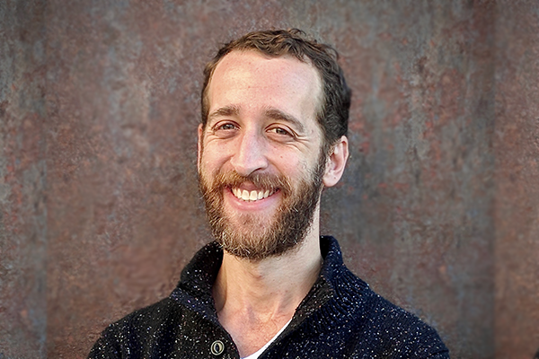
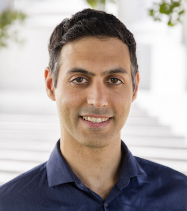
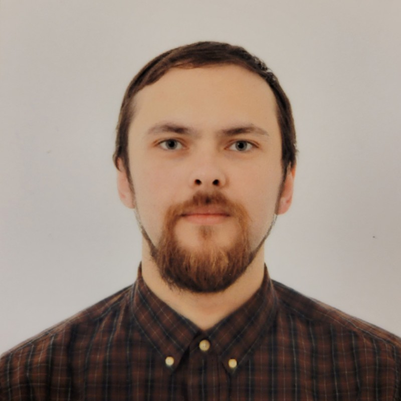
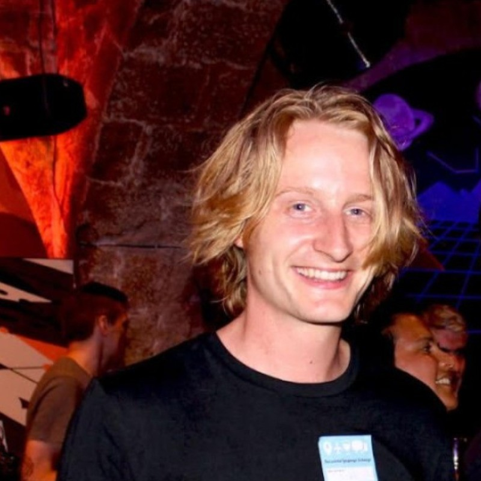
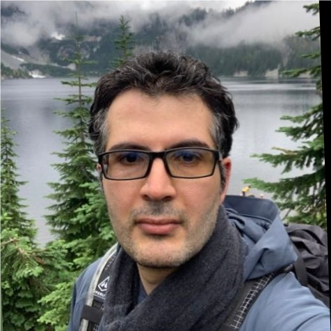
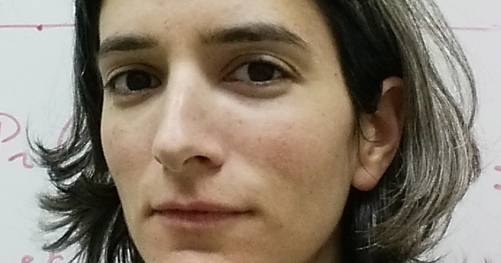

Members


Eran Halperin, PhD
Professor
Dept. of Computer Science, Courant Institute
Dept. of Precision Medicine, NYU Langone
Google Scholar
Dept. of Computer Science, Courant Institute
Dept. of Precision Medicine, NYU Langone
Alumni

Bogdan Pasaniuc, PhD
Former Post-doctoral Researcher
Now: Professor of Genetics, University of Pennsylvania
Now: Professor of Genetics, University of Pennsylvania

Noah Zaitlen, PhD
Former Post-doctoral Researcher
Now: Professor, UCLA
Now: Professor, UCLA

Elior Rahmani, PhD
Former PhD Student
Now: Assistant Professor, Stanford University
Google Scholar
Now: Assistant Professor, Stanford University
Regev Schweiger, PhD
Former PhD Student
Now: Senior Lecturer, Tel-Aviv University
Now: Senior Lecturer, Tel-Aviv University
Lucia Conde, PhD
Former Post-doctoral Researcher
Now: Senior Research Fellow, University College London
Now: Senior Research Fellow, University College London
Jeff Chiang, PhD
Former Senior Data Scientist
Now: Assistant Adjunct Professor, UCLA Computational Medicine
Google Scholar
Now: Assistant Adjunct Professor, UCLA Computational Medicine
Ákos Rudas, PhD
Former Senior Data Scientist
Now: Adjunct Instructor & Data Scientist, UCLA Computational Medicine
Now: Adjunct Instructor & Data Scientist, UCLA Computational Medicine



Dr. Igor Mandric
Former Post-doctoral Researcher
Now: Senior Machine Learning Engineer, Meta
LinkedIn
Now: Senior Machine Learning Engineer, Meta

Mike Thompson, PhD
Former PhD Student
Now: Senior Scientist, Johnson & Johnson
LinkedIn
Now: Senior Scientist, Johnson & Johnson

Dr. Misagh Kordi
Former Post-doctoral Researcher
Now: Senior Bioinformatics Scientist, Guardant Health
LinkedIn
Now: Senior Bioinformatics Scientist, Guardant Health
Dr. Gad Kimmel
Former Post-doctoral Researcher
Now: Senior Financial Algorithms Researcher & Team Leader, Final
LinkedIn
Now: Senior Financial Algorithms Researcher & Team Leader, Final
Dr. Yedael Waldman
Former Post-doctoral Researcher
Now: Computational Biologist, NRGene Ltd.
LinkedIn
Now: Computational Biologist, NRGene Ltd.

Yael Baran, PhD
Former PhD Student
Itamar Eskin
Former MSc Student